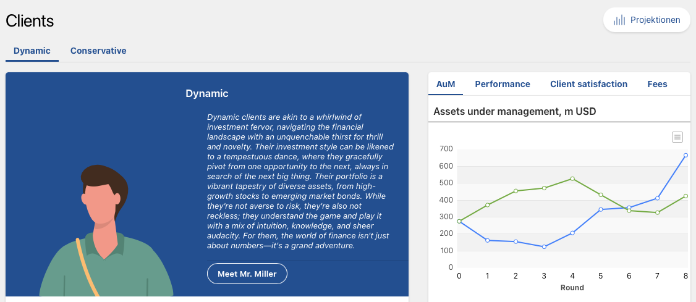

4 Client Analysis
Associated slides: Lesson 3 — Client Discovery & the Investment Policy Statement
4.1 Introduction
In professional investment management, building a portfolio is only one part of the process. Before deciding how to invest, the manager must understand the person the portfolio is being built for. A strategy that ignores a client’s circumstances, goals, and behavioral biases is unlikely to work over time. Good investment management begins with a clear understanding of each client’s needs.
Client analysis means collecting, checking, and recording information about a client. This includes both financial facts and personal information. The goal is to make sure that investment decisions fit the client’s needs. This process provides the basis for a strategy that is suitable, responsible, and realistic. It is formalized through the “Know Your Client” process, commonly called KYC. KYC requires the advisor to understand the client’s financial situation, investment experience, and ability to take on risk. However, KYC should be only the starting point. The broader goal is to move from “Know Your Client” to “Know Your Person.” This means looking beyond the balance sheet and understanding the personal factors that influence financial decisions. The main output of a complete client analysis is the Investment Policy Statement, or IPS. The IPS is a written plan for the investment relationship. It describes the client’s objectives and constraints, guides portfolio construction, and provides a basis for evaluating performance.
4.2 Analyzing Client’s Investment Goals
A tailored investment strategy begins by isolating and defining the client’s specific financial objectives. This analysis determines how portfolios are structured and governed, ensuring alignment with needs, preferences, and life circumstances.
4.2.1 Stages of Life
A client’s position within the financial lifecycle dictates investment objectives, risk capacity, and time horizon. Recognizing this position allows us to anticipate goals and design a strategy that adapts as circumstances evolve. The framework is grounded in the Life-Cycle Hypothesis (LCH) pioneered by Modigliani and Brumberg (1954). Modigliani’s theory suggests that individuals seek to smooth their consumption over their entire lifetime, borrowing when young, accumulating wealth during their most productive years, and dissaving during retirement.
While rooted in Modigliani’s Life-Cycle Hypothesis, the practical application for wealth managers is typically organized into four distinct phases, a framework popularized by Maginn et al. (2007): Accumulation, Consolidation, Transition (Pre-Retirement), and Distribution (Retirement). However, the theoretical foundation for optimal life-cycle portfolio choice under uncertainty was established by Merton (1969), Merton (1975) and Samuelson (1975). Crucially, their continuous-time stochastic models demonstrate that the optimal allocation to risky assets is not a simple deterministic function of age. Instead, it is a dynamic response to the stochastic nature of investment opportunities, the investor’s evolving risk aversion, and the present value of future labor income, commonly referred to as human capital.

The Early Career Phase: Wealth Accumulation
This phase usually covers ages twenty to thirty-five. People are beginning their careers, so income is often modest at first but may increase over time. Many people also marry, start a family, or buy their first home during these years. Student loans, mortgage payments, and childcare can make expenses high compared with income.
Even with these financial pressures, early-career investors have two important advantages: time and human capital. Human capital is the current value of expected future earnings. For someone with a stable career, these future earnings can provide a relatively dependable source of wealth, similar to a bond. This may allow the financial portfolio to hold more growth-oriented assets. With thirty to forty years until retirement, the investor has time to recover from short-term market declines. Continued saving and investment growth can help the portfolio recover from temporary losses.
The main objective in this phase is to build wealth. Portfolios may therefore include more growth-oriented assets. These assets can fluctuate substantially in value, but they may provide higher returns over long periods. Common goals include creating an emergency fund, saving for a home deposit, starting retirement contributions, and saving for children’s education.
The Mid-Career Phase: Wealth Consolidation
The mid-career phase usually covers ages thirty-five to fifty. Income often increases, but expenses may also remain high, especially when people are paying a mortgage or funding their children’s education.
Retirement becomes a more immediate goal during this phase. Investors have often experienced several market cycles and may better understand how they respond to losses. The portfolio may shift from a strong focus on growth toward a more balanced mix of equities and fixed income. Equities can support growth, while fixed income can provide stability. There may still be fifteen to twenty-five years until retirement, but protecting the wealth already accumulated becomes more important. The main objective is to continue growing wealth while reducing the risk of a major loss.
The Pre-Retirement Phase: The Critical Transition
The pre-retirement phase usually covers ages fifty to sixty-five. Retirement is now clearly approaching, and investors must plan how to turn their savings into a dependable source of income.
Some large expenses, such as mortgage payments or children’s education, may end during this period. This can create room for additional retirement savings. Other important decisions may also arise, such as receiving an inheritance, selling a business, or choosing when to claim pension benefits. Protecting capital becomes more important because a large loss just before or shortly after retirement can seriously reduce how long the portfolio will last. This is called sequence-of-returns risk. As employment income comes to an end, the portfolio has less support from future earnings. Taking withdrawals during a market decline can also lock in losses and make recovery more difficult.
The time until significant withdrawals begin may be between zero and fifteen years. This leaves less time to recover from losses. Many investors therefore become more cautious. Liquidity planning is also important: some assets should be easy to sell to meet near-term expenses. Possible approaches include bond ladders, dividend-paying equities, and systematic withdrawal plans. The main objectives are protecting capital and preparing for retirement income.
The Retirement Phase: Wealth Distribution
The retirement phase usually begins around age sixty-five and continues for the rest of the investor’s life. Employment income has stopped or fallen substantially, and human capital has largely been used. The portfolio must now help pay for living expenses.
The investment horizon does not necessarily end at retirement. It may last twenty to thirty years or more. Healthcare and long-term care costs become important, as do plans for leaving wealth to others. The portfolio must provide income that keeps pace with inflation while still growing enough to support future needs. The ability to take risks is often lower because the portfolio is being used for expenses and there is less time to recover from losses.
Retirees differ in how much risk they are willing and able to accept. Someone with enough guaranteed pension income may feel comfortable holding more equities, while another retiree may prefer a very conservative portfolio. Liquidity is important in both cases. Some assets should be readily available for near-term expenses, so investments do not have to be sold during a market decline. The main objectives are generating income and preserving wealth.
| Phase | Name | Primary Objective | Income Focus | Human Capital State |
|---|---|---|---|---|
| 1 | Early Career | Growth | Very Low | High |
| 2 | Mid-Career | Growth with Preservation | Low | Peak |
| 3 | Pre-Retirement | Preservation | Peak | Rapidly converting to financial capital |
| 4 | Retirement | Preservation with Income | Moderate | Fully exhausted |
4.2.2 Sources of Wealth
The client’s life stage indicates where the investor is within the financial life cycle. The source of wealth reveals how the portfolio was built. This distinction matters because it can shape risk tolerance, emotional responses to market volatility, and investment objectives. Two clients with similar net worth and life stage may require different strategies if their wealth was created through different means. Understanding the source of wealth helps explain how a client relates to money. Following the framework of Barnewall (1987), investors can be divided into ‘Active’ investors, who created wealth through their own effort and often prefer control, and ‘Passive’ investors, who inherited wealth and may focus on preserving it for future generations.
Wealth generally arises from three principal sources. Each source can influence behavior in distinct ways.
Earned Wealth
The first category consists of wealth accumulated through employment, entrepreneurship, and professional practice. It includes entrepreneurs who build and sell businesses, executives who save over long careers, and professionals such as doctors, lawyers, and consultants who convert skill and labor into financial assets.
Individuals with earned wealth often have a strong sense of ownership and responsibility. They regard accumulated assets as the product of years of effort, sacrifice, and expertise. As a result, they may feel particularly protective of capital. A market decline can feel less like a statistical fluctuation and more like a threat to a lifetime of work. Entrepreneurs and business owners may appear to behave inconsistently. They may accept substantial risk in their businesses while becoming highly cautious with liquid wealth. They may also see their investment portfolio as the result of personal effort and wish to preserve it. Concentration risk can be significant if much of their wealth remains tied to a single business or industry. Such clients may resist diversification, especially after a business sale, if it requires selling assets that symbolize their achievement. They may also hesitate to take investment risk even when they have sufficient time to recover from losses.
Inherited Wealth
The second source is wealth transferred across generations. The recipient did not earn the money directly and may have limited experience managing large balances.
These individuals often feel a responsibility to protect the assets for the benefit of family members or future heirs. They may see themselves as stewards of wealth rather than owners. Feelings of guilt, uncertainty, and responsibility can lead to either excessive caution or impulsive decision-making. The endowment effect, described by Kahneman et al. (1990), indicates that people often place greater value on assets they already own. In practice, selling family stock can feel emotionally difficult even when it is a sound financial decision. Some recipients may also lack experience with large-scale financial decisions because they have never needed to manage substantial sums before.
For inherited wealth, the principal goals are often preservation and legacy. The objective is frequently to ensure that wealth lasts across generations rather than to pursue aggressive growth. These clients may be unwilling to sell a large or tax-inefficient position because of its symbolic and emotional significance.
Speculative or Windfall Wealth
The third category includes wealth created through speculation or sudden financial events. Examples include lottery winnings, legal settlements, gains from speculative investments such as cryptocurrency, and startup shares that appreciate dramatically beyond expectations.
These individuals may not assess risk with the same accuracy as others. People who succeed through a risky bet often underestimate the role of luck and overestimate their own skill. This can produce overconfidence and a willingness to take larger risks. The self-serving attribution bias leads people to attribute success to skill while blaming failure on outside circumstances. The “house money effect,” described by Thaler and Johnson (1990), shows that individuals often take greater risks with gains they perceive as windfall income than with money they consider their original wealth. Some may believe they can repeat earlier success. At the other extreme, others feel intense anxiety after receiving a windfall, fearing the loss of money they did not earn and becoming overly conservative.
These clients are especially vulnerable to behavior-driven investing errors, whether by taking excessive risk or by becoming overly cautious. They often benefit from clear explanations, a gradual introduction to investing, and disciplined decision rules. A structured plan can help prevent impulsive actions. Some may also benefit from annuities or other tools that reduce the consequences of poor decisions.
The following table summarizes the behavioral profiles associated with each wealth source.
| Source | Primary Behavioral Tendency | Key Investment Implication |
|---|---|---|
| Earned Wealth | Loss Aversion | Strong preference for capital preservation; resistance to diversification. |
| Inherited Wealth | Endowment Bias | Emotional attachment to specific assets; focus on stewardship over growth. |
| Speculative/Windfall | Overconfidence or Anxiety | Distorted risk perception; requires structure and education. |
4.2.3 Personality Types in Investing
In addition to understanding the sources of a client’s wealth, it is important to consider how the client’s personality influences financial decision-making. In applied portfolio management, the standard framework for categorizing these behavioral patterns is the model developed by Bailard et al. (1986), which is widely adopted in professional wealth management curricula (Maginn et al. 2007).
The BBK model evaluates investors along two primary axes: their level of confidence in their financial decisions, and their approach to information processing (ranging from highly analytical to highly impulsive). Based on the intersection of these dimensions, investors are typically classified into five distinct personality types. Understanding these archetypes allows us to anticipate behavioral drivers, tailor our communication, and design a portfolio structure that aligns with the client’s natural decision-making style.
The Straight Arrow
This type sits in the middle of both the confidence and analysis scales. Straight arrows usually feel reasonably comfortable with investing and take a balanced, steady approach to managing their portfolio. Fear and impulse are not dominant forces in their decision-making. Because they are fairly consistent and predictable, they usually do well with standard, well-diversified portfolios and only need routine communication from their advisor to stay on track with their long-term plan.
The Methodical Investor
Methodical investors are confident and highly analytical. They rely on numbers, research, and facts, often spending considerable time studying market trends and evaluating complex strategies. Decisions are grounded in data rather than emotion, which makes them less likely to become attached to a particular asset for irrational reasons. However, the need for information can sometimes lead to over-analysis. Advisors should respect this style by providing detailed, data-based research and clear explanations of performance.
The Cautious Investor
Cautious investors are highly analytical but lack confidence in their own decisions. Potential losses tend to weigh heavily on them, and financial security is a major priority. They gather information carefully, yet their fear of making a mistake can lead to hesitation and delayed action. This tendency may cause them to miss attractive opportunities because they focus too much on downside risk. Portfolios for cautious investors should emphasize capital protection and low volatility, while advisors provide frequent reassurance, clear communication, and calm guidance during difficult market periods.
The Individualist
Individualists are confident and somewhat analytical. They think for themselves, seek out information, and are not afraid to disagree with the crowd. Trust in their own judgment allows them to take positions that run against the consensus, and this independence can create strong conviction and long-term success. At the same time, it can also lead to concentrated bets or a tendency to discount professional advice. Advisors should act as objective sounding boards, testing the client’s ideas carefully while still respecting their independence.
The Spontaneous Investor
Spontaneous investors do not feel very confident in their own analysis, but they are highly impulsive. Market news can trigger strong reactions, and they often worry that they are missing out on the latest trend. As a result, they may trade too often and manage their portfolio too actively. This constant second-guessing typically hurts returns through transaction costs and poor timing. Advisors need to bring structure and discipline, using automated rebalancing and clear investment rules to prevent emotionally driven trades.
| Personality Type | Confidence Level | Decision Style | Primary Need from Advisor |
|---|---|---|---|
| Straight Arrow | Moderate | Balanced | Standard diversification; routine communication |
| Methodical | High | Highly Analytical | Deep, data-driven research; transparent attribution |
| Cautious | Low | Highly Analytical | Reassurance, capital preservation, and downside protection |
| Individualist | High | Independent | Objective stress-testing; respect for contrarian views |
| Spontaneous | Low | Impulsive | Strict discipline, automated processes, and trading guardrails |
4.3 Assessing Risk Tolerance
After considering the client’s life stage, sources of wealth, and behavior, we can assess their risk tolerance. Risk tolerance is not one number. It has two parts that should be assessed separately and then considered together.
The first part is the ability to take risk. This is objective and can be measured. It depends on factors such as the investment time horizon, the stability of income, the amount of wealth compared with spending needs, and how flexible the client’s goals are. A client with a long time horizon, stable employment, substantial assets, and flexible goals has a high ability to take risk. This client can withstand a market decline without changing their lifestyle or giving up their plans. In contrast, a client who is about to retire, has no earned income, limited assets, and essential spending needs has a low ability to take risk. A large loss could force this client to make major changes to their retirement plans. Ability concerns what a client can afford to risk, not what they prefer. It sets the highest level of risk that is sensible for the client.
The second part is the willingness to take risk. This is personal and psychological. It describes how comfortable the client feels with uncertainty and possible losses. Willingness is shaped by personality, past experiences with markets, and the source of the money being invested. A client who built a business over many years may want to protect that money. A client who received an inheritance may feel responsible for preserving it and avoid risk. A client who has made money through speculation may feel confident taking more risk than is appropriate. Willingness sets the level of risk that the client feels able to accept.
These two dimensions do not always align. Someone may have the financial capacity to take substantial risk yet feel deeply uncomfortable with the prospect. In that situation, the advisor should use the lower of the two levels as the practical constraint. Otherwise, the client may abandon an overly risky portfolio during the worst part of a market decline, selling at a loss and undermining the entire plan. A strategy that looks optimal on paper but cannot be maintained is inferior to a less risky approach the client can hold with confidence. The reverse mismatch also occurs: someone may welcome substantial risk without having the financial capacity to absorb it. Education and guidance are then essential, because enthusiasm for risk must not jeopardize financial security. Ultimately, the advisor’s role is to help protect the client from both market conditions and their own reactions to those conditions.
4.3.1 Methods for Evaluating Client’s Risk Appetite
Several methods exist to assess a client’s risk tolerance. Each contributes a different type of information, and the most complete assessment draws from all available sources.
Questionnaires offer a structured, quantifiable baseline by presenting hypothetical scenarios and asking clients to indicate their preferences. For example, respondents might consider how they would react to a 20 percent decline in portfolio value over six months: would they sell everything, sell part of the portfolio, do nothing, or invest more? Scores can then be normalized and compared across clients, providing a useful starting point for discussion. Their limitations are equally important, however. Responses may vary with mood, question wording, or recent market experience. Someone emerging from a prolonged bull market may overestimate their tolerance, whereas recent losses may lead another person to underestimate it. Moreover, questionnaires cannot capture the nuanced reasons behind those answers. They measure the “what,” but not the “why.”
Personal interviews are therefore essential for uncovering the stories behind the numbers. Conversation can reveal what the client remembers about previous market downturns and how they responded in real time, rather than how they imagine they would behave hypothetically. It may also clarify what a deceased parent would have wanted for inherited money, or how a worthless speculative investment would affect other goals. Such discussions expose not only what clients think but also how they feel. Someone who reports being able to tolerate a 20 percent decline may respond very differently when the loss becomes real and carries personal history and meaning.
Behavioral observation provides a third source of insight, since past actions often predict future behavior during market stress better than stated intentions. Relevant clues include checking account values daily, calling in a panic during normal fluctuations, holding losing positions too long, or selling winners prematurely to lock in gains. When present, these patterns reveal the client’s psychological relationship with risk more accurately than any stated preference.
Beyond questionnaires and interviews, we can use more formal methods to quantify risk aversion. One approach involves presenting clients with a series of choices that reveal underlying preferences. The advisor describes a risk-free asset earning a known return and a risky portfolio with known volatility and expected excess return. The client is then asked what percentage of their wealth they would allocate to the risky portfolio, and the answer implies a specific coefficient of risk aversion. This quantitative method of assessing utility under uncertainty is grounded in the Arrow-Pratt measure of risk aversion (Arrow 1965; Pratt 1978), which allows advisors to translate psychological temperament into a mathematical input for portfolio construction.
Consider a practical example using the standard mean-variance approximation for the optimal share invested in a risky asset. If a client chooses a risky-asset allocation \(y\), then the implied coefficient of relative risk aversion is approximately
\[ \gamma = \frac{E[R_p] - R_f}{y \sigma_p^2} \]
where \(E[R_p]\) is the expected return on the risky portfolio, \(R_f\) is the risk-free rate, \(\sigma_p\) is the portfolio volatility, and \(y\) is the share of wealth allocated to the risky asset. Here, the risk-free rate is 2 percent, so \(R_f = 0.02\), the expected return on the diversified equity portfolio is 6 percent, so \(E[R_p] = 0.06\), and volatility is 20 percent, so \(\sigma_p = 0.20\). The excess return is therefore
\[ E[R_p] - R_f = 0.06 - 0.02 = 0.04 \]
and the variance is
\[ \sigma_p^2 = (0.20)^2 = 0.04. \]
If the client says they would allocate 25 percent of their wealth to equities, then \(y = 0.25\) and the implied coefficient is
\[ \gamma = \frac{0.04}{0.25 \times 0.04} = \frac{0.04}{0.01} = 4. \]
If they would allocate 60 percent to equities, then \(y = 0.60\) and the implied coefficient is
\[ \gamma = \frac{0.04}{0.60 \times 0.04} = \frac{0.04}{0.024} \approx 1.67. \]
These examples show how the advisor converts a stated allocation decision into a quantitative measure of risk aversion. The advisor can then vary the assumptions and ask whether the client’s allocation changes in the expected direction when expected return or volatility changes. If the allocation does not respond to changes in expected return, the client may not fully understand the tradeoff between risk and reward, suggesting a need for more education. As a practical shorthand, a risk aversion coefficient above 6 suggests a conservative profile, a coefficient between 3 and 6 suggests a moderate profile, and a coefficient below 3 suggests an aggressive profile. This quantitative anchor complements the qualitative insights gained through interviews, helping translate psychological profiles into concrete portfolio construction parameters.
4.3.2 Matching Risk Tolerance with Investment Strategies
Once risk tolerance is assessed, it must be matched with appropriate investment strategies. This matching process ensures that the portfolio’s risk characteristics align with the client’s ability and willingness to bear uncertainty.
Conservative strategies are appropriate for clients with low risk tolerance, typically those with risk aversion coefficients above 6. These strategies prioritize capital preservation and income stability over growth. Portfolios might include 60 to 80 percent in high-quality bonds, with the remainder in diversified equities, often biased toward stable, dividend-paying companies. Cash and cash equivalents may represent a meaningful allocation to provide liquidity and reduce portfolio volatility. The primary objective is to limit the frequency and severity of losses, even if this means accepting lower long-term returns. For a client with strong loss aversion, a conservative strategy provides the psychological safety required to remain invested through market cycles.
Moderate strategies suit clients with risk aversion coefficients between 3 and 6. These strategies seek a balance between growth and preservation, typically with equity allocations between 40 and 60 percent and the remainder in fixed income. Diversification across asset classes, geographies, and investment styles is emphasized to smooth returns without sacrificing growth potential. The client accepts some volatility in exchange for higher expected returns but still requires a meaningful cushion against severe downturns.
Aggressive strategies are designed for clients with high risk tolerance, those with coefficients below 3. These strategies focus on capital appreciation, with equity allocations of 70 percent or more. They may include exposure to smaller companies, emerging markets, or other higher-risk segments. Volatility is expected and must be tolerated. The long time horizon and high risk capacity of these clients allow them to ride out significant declines in pursuit of higher long-term returns.
Risk tolerance is not necessarily uniform across all of a client’s assets. The goal-based segmentation discussed earlier allows for different risk profiles to be applied to different pools of capital. A client may hold a conservative allocation for near-term spending needs and an aggressive allocation for long-term legacy assets. This approach can help reconcile conflicting risk tolerances within a single household and provide a framework for addressing situations where ability and willingness diverge.

4.4 Identifying Rate of Return Requirements
Accurately identifying a client’s required rate of return is essential to building an investment strategy that matches their goals, risk tolerance, and time horizon. This requirement is not simply an aspirational number. It is a calculated figure that depends on three core inputs: the capital available for investment, the timing and size of future cash outflows, and the assumptions used for inflation and taxes. If the return target is set too low, the portfolio may fail to meet the client’s objectives. If it is set too high, the client may be pushed into risk levels they cannot sustain, leading them to abandon the plan during periods of market stress.
The process begins with a clear inventory of all financial assets and all financial goals. Assets that are not available for investment, such as a primary residence or illiquid holdings the client refuses to sell, should be excluded from the capital base that will be used to fund future objectives. Goals must be stated precisely: the amount required, the date when funds are needed, and whether the need is a one-time payment or an ongoing stream of withdrawals. Non-negotiable goals, such as a basic retirement lifestyle, carry more weight than discretionary goals that could be reduced or postponed if necessary.
Once available capital and required cash flows are defined, the required return can be estimated. For a simple, single-purpose goal, the calculation is a standard time-value-of-money problem. The present value of the assets set aside, the future value needed, and the number of years to the target date together determine the annualized rate of return required. For ongoing needs, such as retirement income, the problem is more complex. The portfolio must generate enough return to fund withdrawals that rise with inflation while preserving the portfolio’s ability to continue supporting those withdrawals for the client’s expected lifetime. This is the sustainable withdrawal rate problem. The required return is the rate that, after annual withdrawals and taxes are considered, still allows the portfolio to maintain its real value over the chosen horizon.
Inflation and taxes are therefore critical inputs to the calculation. A spending need stated in nominal terms understates the true requirement if inflation is ignored. For example, a withdrawal of €160,000 today may require approximately €205,000 in ten years if inflation averages 2.5 percent annually. The portfolio must therefore generate enough return not only to meet the initial withdrawal but also to cover the cumulative effect of inflation over time. Taxes raise the required pre-tax return further. If a portion of portfolio returns is lost to taxation each year, the pre-tax return must exceed the after-tax spending need by an amount that depends on the client’s marginal tax rate and the tax efficiency of the investments.
4.4.1 Calculating the Client’s Target Rate of Return
The calculation of the required return usually proceeds in a clear sequence. First, the advisor inventories the capital available for investment. Second, each goal is specified in terms of required cash outflows and time horizon. Third, capital earmarked for near-term and medium-term goals is set aside in conservative instruments that provide principal protection and lower volatility. Fourth, the remaining long-term portfolio is assigned the return needed to fund the residual goals, particularly retirement income and any desired legacy.
The mathematics of this calculation is relatively straightforward. The interpretation of the result, however, requires judgment. A required return of 2 percent suggests that the client’s goals are likely achievable with a relatively conservative portfolio. A required return of 12 percent suggests that the goals may be unrealistic given the available capital and that adjustments will be necessary. Those adjustments may include saving more, spending less, working longer, or accepting a lower probability of achieving certain discretionary goals. A required return in the range of 5 to 8 percent is common for many retirement portfolios and is generally achievable with a balanced allocation to equities and fixed income over long time horizons, though not without periods of volatility.
4.4.2 Balancing Return Targets with Market Realities
The required return is a mathematical output. Whether that return can be achieved with an acceptable level of risk is a different question. Historical returns on diversified portfolios of stocks and bonds have averaged roughly 6 to 8 percent over long periods, but that average conceals large year-to-year and decade-to-decade volatility. A portfolio expected to earn 7 percent over the long term may require a significant equity allocation, often around 50 to 60 percent. Such a portfolio could experience peak-to-trough declines of 20 to 30 percent during severe bear markets. The client must be able to tolerate these declines without abandoning the plan.
This creates a central tension in investment planning: the required return may imply a level of portfolio risk that exceeds the client’s willingness to accept. When that happens, the advisor has several options. The first is to educate the client about the relationship between volatility and long-term returns, helping them understand that short-term fluctuations are often the price of achieving higher long-run growth. The second is to adjust the goals, reducing spending expectations or extending time horizons so that the required return declines. The third is to structure the portfolio in a way that reduces the client’s perception of risk without changing the underlying economics. This may include using separately managed accounts with direct bond holdings instead of bond funds, which can offer the comfort of knowing that individual bonds will mature at par. It may also involve segmenting the portfolio into distinct buckets for near-term spending and long-term growth so the client can see that essential needs are secured in conservative assets while the growth portfolio fluctuates.
The required return is not a fixed target. It is a starting point for a discussion about the trade-offs among return, risk, and goals. The final investment strategy reflects a negotiated balance among these competing demands, honoring both the mathematical requirements of the plan and the psychological realities of the client.

4.5 Other Client Requirements and Constraints
Risk tolerance and return requirements define the central parameters of an investment strategy. A comprehensive plan, however, must also account for a broader set of client-specific requirements and constraints. These include legal and tax considerations, ethical and social preferences, and the regulatory framework within which the advisor operates. Each of these factors can limit or direct investment choices, and ignoring them produces a plan that is theoretically sound but practically unworkable.
4.5.1 Legal and Tax Considerations
The legal framework within which a client operates constrains investment choices and influences portfolio structure. These constraints vary by jurisdiction, by the client’s personal circumstances, and by the specific assets they hold. Legal restrictions may limit investment opportunities in certain countries or industries. Ownership structure matters, since assets held in a trust, a foundation, or a corporate entity may be subject to different rules than assets held directly by an individual. Inheritance laws determine how wealth transfers at death and may influence decisions about gifting during life or structuring accounts with designated beneficiaries. Cross-border considerations arise when a client holds assets or citizenship in multiple countries, potentially exposing them to overlapping tax regimes or reporting requirements.
Tax considerations are critical because they directly affect the net return available to fund the client’s goals. Different investment vehicles and strategies carry distinct tax implications. Interest income, dividend income, and realized capital gains may be taxed at different rates. Investments held in tax-advantaged accounts grow without annual tax drag, while those held in taxable accounts generate ongoing liabilities. The timing of tax payments also matters. Deferring taxes allows capital to compound on a pre-tax basis for longer, increasing terminal wealth. The realization of capital gains can be controlled by the client, creating opportunities to harvest losses to offset gains or to time sales for years when income is lower. Estate taxes or inheritance taxes may apply to wealth transferred at death, influencing decisions about lifetime gifting or the use of trusts.
The advisor must be proficient in optimizing investment strategies within the applicable tax framework. This does not mean the advisor serves as a tax preparer or legal counsel. It means the advisor understands the tax consequences of investment decisions and coordinates with the client’s other professional advisors to ensure that the portfolio is managed in a tax-efficient manner consistent with the client’s overall financial picture.
4.5.3 Regulatory Requirements
Investment advisors operate within a complex landscape of industry and government regulations. These regulations govern what products can be offered, how advice must be delivered, and what disclosures must be made.
The most fundamental regulatory distinction is the standard of care to which the advisor is held. The suitability standard, which applies to many broker-dealers, requires that a recommended transaction or investment strategy be suitable for the client based on their financial situation, needs, and objectives. This standard allows for recommendations that are appropriate even if not necessarily the optimal choice among available alternatives. The fiduciary standard, which applies to registered investment advisors and to professionals holding certain designations such as the CFA charter, imposes a higher duty. The advisor must act in the client’s best interest at all times, disclosing all conflicts of interest and seeking to minimize costs and maximize benefits for the client. The advisor’s interests must be subordinated to the client’s interests, and advice must be not merely suitable but demonstrably in the client’s best interest.
Regulations also require extensive disclosure and documentation. The investment management agreement specifies the scope of services, the fee structure, and the responsibilities of each party. The Investment Policy Statement documents the client’s objectives and constraints and serves as the benchmark against which portfolio performance and advisor conduct will be evaluated. Regular reporting provides clients with clear information about portfolio performance, fees paid, and any material changes to their investments. These reports must be understandable and accurate, enabling clients to assess whether their advisor is meeting expectations.
4.6 Client Analysis in the IMAG
The framework developed in this chapter is applied directly in the IMAG simulation. Participants manage portfolios for a diverse client base, and the accuracy of their client analysis directly determines their ability to attract and retain assets. The following profile illustrates how a short client description must be translated into an investable set of objectives and constraints.

4.6.1 Case Study: Mr. Miller
Mr. Miller is a thirty-nine-year-old fintech entrepreneur from New York. Following the initial public offering of his company, his net worth has risen to USD 11 million. He lives in a modern loft overlooking Central Park and is eager to pursue new investment opportunities. His profile can be interpreted using the three questions developed in this chapter: where is he in the life cycle, how was his wealth created, and how does he approach investment decisions?
Life Stage and Source of Wealth
Mr. Miller is in the mid-career phase. His human capital is still substantial and typically approaching its peak, but it is not equivalent to a risk-free bond. His income and career prospects are highly correlated with the growth of the technology and equity markets. This exposure must be considered alongside the financial portfolio. A portfolio that is diversified across several technology stocks may still leave Mr. Miller’s total wealth concentrated in the same economic forces that determine his employment income.
His wealth is earned wealth. He created it through entrepreneurial effort, and the IPO has converted part of that business wealth into financial capital. This is an important distinction from inherited wealth or a purely speculative windfall. At the same time, the IPO is a liquidity event, and the sudden increase in wealth may encourage him to pursue new opportunities too quickly. The advisor should establish whether he still owns company shares, whether those shares are subject to selling restrictions, and how much of his net worth remains linked to the fintech business.
Objectives and Risk Tolerance
Mr. Miller’s objectives lie between wealth accumulation and wealth consolidation with continued growth. He wants to protect the wealth created through the IPO while continuing to build wealth over a long investment horizon. His age, substantial net worth, and distance from retirement indicate a high ability to take risk. His enthusiasm for new investment opportunities indicates a high willingness to take risk. The final assessment would still require information about his spending needs, tax position, income after the IPO, and response to previous market losses.
The profile is also consistent with the Individualist type in the BBK model. Mr. Miller is confident, independent, and likely to place considerable weight on his own views. His entrepreneurial success may reinforce overconfidence and encourage concentrated positions or frequent attempts to identify the next opportunity. The advisor should respect his independence while providing objective stress tests, clear diversification limits, and a disciplined rebalancing policy.
4.6.2 Translating the Profile into Portfolio Constraints
The client description specifies the following permitted allocation ranges for the asset classes that are available:
| Asset Class | Minimum Allocation | Maximum Allocation | Role in the Portfolio |
|---|---|---|---|
| Government bonds | 7% | 35% | Stability, liquidity, and portfolio ballast |
| Equities | 30% | 100% | Long-term growth and capital appreciation |
These ranges are binding constraints, not a recommendation to invest at every maximum. Because the allocations must sum to 100 percent, the upper limits cannot all be reached at the same time. For Mr. Miller, the risk-aversion coefficient provides an additional way to connect the qualitative assessment to a portfolio allocation. A coefficient of approximately 2 is consistent with an aggressive investor who places a high proportion of wealth in risky assets. In this case, an illustrative allocation is:
| Asset Class | Illustrative Allocation | Purpose |
|---|---|---|
| US equities | 55.0% | Primary source of long-term growth |
| EU equities | 25.0% | Regional diversification and additional growth exposure |
| US government bonds | 12.5% | Stable anchor and liquidity |
| EU government bonds | 7.5% | Fixed-income diversification |
| Total | 100.0% |
This allocation provides 80 percent in equities and 20 percent in government bonds. It is consistent with Mr. Miller’s high ability and willingness to take risk while preserving a stable anchor. The allocation also introduces a home bias: US assets represent 67.5 percent of the portfolio, while EU assets represent 32.5 percent. This preference may be reasonable for a client living and working in the United States, whose future spending, income, and tax obligations are primarily denominated in US dollars. It reduces currency and familiarity risks, but it also increases exposure to the US economy and should therefore be recognized as a deliberate trade-off rather than described as complete geographic diversification.
The allocation must also be evaluated against Mr. Miller’s total wealth. If he retains a large position in his former company, the portfolio manager should avoid adding unnecessary exposure to the same technology and fintech risks. Diversification across the four available instruments is not sufficient if employment income, company shares, and portfolio holdings all respond to the same market shock. The exact weights should therefore be reviewed alongside the retained IPO shares, liquidity needs, taxes, and the client’s actual experience of losses. The risk-aversion coefficient is a useful quantitative anchor, but it does not replace the broader client analysis.
4.6.3 Return Objective and ESG Preference
Mr. Miller’s primary objective is to maximize returns, subject to the allocation ranges and the requirement for diversification. This is consistent with his age, wealth-accumulation history, and long investment horizon. It does not mean that the portfolio should maximize risk without limit. The advisor must compare the return required to fund his stated goals with the return that can reasonably be expected from the permitted asset universe. Until his spending, future commitments, and desired legacy are known, the IPS should describe the objective as long-term capital growth rather than assign an unsupported numerical return target.
Mr. Miller recognizes the importance of environmental, social, and governance considerations, but ESG is a secondary preference rather than an absolute exclusion policy. The appropriate approach is therefore to consider ESG information when selecting investments and to explore ESG opportunities when they are compatible with his growth objective. The advisor should explain any expected effect on diversification, tracking error, liquidity, and return potential. Unless Mr. Miller specifies otherwise, ESG should guide the selection process without overriding the primary requirement to pursue long-term growth within the stated constraints.
The investor profiles encountered in the simulation mirror the typologies examined throughout this chapter. Mr. Miller demonstrates how a growth-oriented entrepreneur can have both high risk capacity and behavioral vulnerabilities associated with overconfidence, concentration, and a recent windfall. Misalignment between investor profiles and portfolio construction carries immediate and measurable consequences. Client satisfaction, assessed through surveys that examine different areas of fund management, directly drives fund demand and assets under management. When portfolios respect the client’s risk tolerance, accommodating loss aversion rather than confronting it and honoring emotional attachments rather than dismissing them, clients remain invested through market cycles. When these psychological boundaries are violated, redemptions follow. The asset base erodes and future opportunities shrink. The discipline of client analysis is therefore not preparation for portfolio management. It is the foundation on which all subsequent decisions rest.